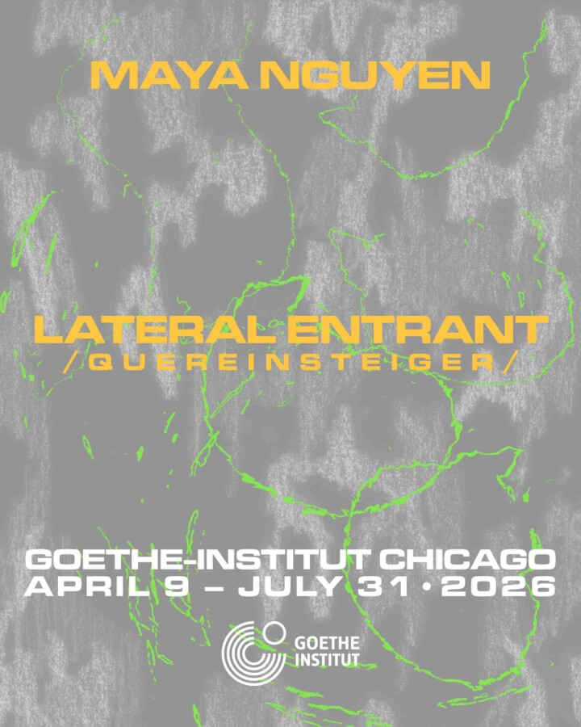

Maya Nguyen: Lateral Entrant
A site-specific exhibition by Chicago-based artist Maya Nguyen connecting Germany, Vietnam, and the US exploring migration and camouflage.
Join us for the opening of LATERAL ENTRANT, a site-specific exhibition by Maya Nguyen that explores migrant strategies of camouflage and adaptation.
Moving between languages, time zones, and visual cultures that connect Vietnam, Germany, and the United States, Nguyen considers translation as a form of arrival. Titled after the German word ‘Quereinsteiger,’ which refers to someone with nontraditional training who transfers into a new professional field, LATERAL ENTRANT is installed throughout the Goethe-Institut Chicago’s space and responds to its environment in an office building. Incorporating video, photography, and performance, this exhibition considers coincidence, misinterpretation, and analogy as tools for investigating both individual biographies and broader experiences of immigration.
Light refreshments will be served. Please register in advance and bring a state- or federally-issued photo ID for check-in in the 150 N. Michigan building lobby.
ABOUT THE ARTIST
Maya Nguyen is an interdisciplinary artist with a focus on sound and diasporic making. Marked by migration from Hanoi, to Moscow, and now Chicago, her practice develops formal strategies to articulate experiences of lived ambiguity. Nguyen incorporates disparate (and often clashing) material sources into forms that remain conceptually indeterminate, such as performance-lectures, sound improvisation, and collaborative sculptures. Some favored materials include: speech fragments, mistranslations, body glitches, migratory routes, urban recordings, sounds imitating nature sounds, internet debris, baby babble, breast pump parts, and videos of daily life, among others. Her works are presented internationally, moving fluidly between galleries, sound venues, pop-up shows and universities, with recent shows at Watershed Art & Ecology (Chicago), Jack Straw New Media Gallery (Seattle), Zentrum für Kunst und Urbanistik (Berlin), Saari Residency (Mynämäki, FI), Manzi Art Space (Hanoi), and recognition as Arts Club of Chicago Fellow 2025-26 and Karl Sczuka Radio Art Research Prize 2024 (SWR/Goethe Institute). Nguyen holds a BA in Philosophy/Comparative Literature from The University of Chicago and MFA in Sound from The School of the Art Institute of Chicago.